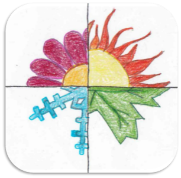
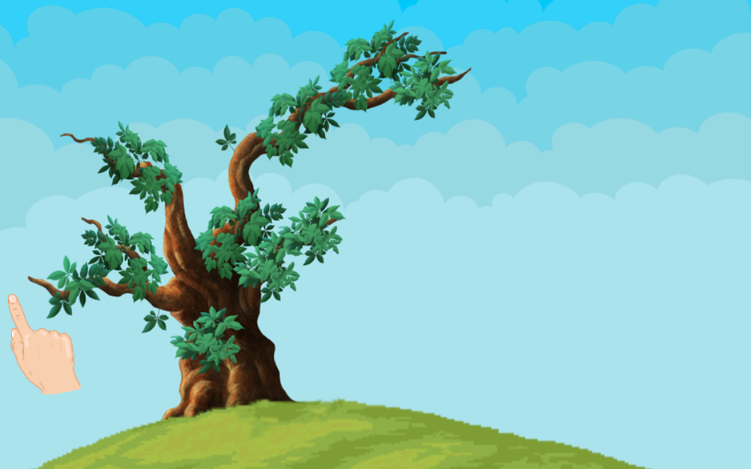

Omschrijving
Een hackathon, zoals de hackathon van Sint-Oda, is een event waar je met een groep aan een project met een gezamenlijk thema kan werken over een bepaalde tijdsspanne. Het centrale thema was in dit geval het maken van een mobiele game voor mensen met een ernstige meervoudige en matige tot diep verstandelijke beperking.
Ons team bestond naast mezelf als programmeur, uit 2 andere programmeurs, namelijk Zoe Viola en Bugra Akdag en 2 softwaremanagers, Robbe Daemen en Kjen Noukens.

Kern
Twee studenten ergotherapie focussen zich voor hun bachelorproef op mensen met een verstandelijke beperking. Tot op heden zijn er weinig tablet- en computergames toegankelijk voor deze doelgroep. Hun onderwerp is het ontwikkelen van een screeningsinstrument in functie van het meten van gebruiksvriendelijkheid van computer- en tabletgames voor mensen met een ernstige meervoudige en matig tot diep verstandelijke beperking. Een screeningslijst kan ontwikkelaars helpen om een geschikt spel voor hen te ontwikkelen. Deze hackathon helpt bij dit onderzoek.
Het doel van de hackathon van Sint-Oda was om een mobiele game te maken voor mensen met een verstandelijke beperking zodat deze studenten hun onderzoek verder konden zetten. Hier kregen we 2 dagen te tijd voor. Elk deelnemend team kreeg een thema gekozen uit de 4 seizoenen. Wij kregen herfst als thema.
Het team zag de opdracht als een echte uitdaging en we hadden allemaal zin om eraan te beginnen. De eerste dag was er een bijeenkomt van alle teams waarbij we een toelichting kregen over de opdracht en over Sint-Oda zelf. Hier werd alle informatie gegeven over de eventuele technologieën die in onze opdracht toegepast konden worden. Daarnaast werd ook uitleg gegeven over het doelpubliek. Zo kwam naar voren dat we best met het programma Unity werkten en dat er best rekening moet worden gehouden met de beperkingen van de inwoners van het dienstencentrum. Zo bleek dat het belangrijk is dat de spellen niet te moeilijk worden gemaakt en dat er best veel visuele en auditieve aspecten in voorkomen. Bij het thema herfst was het de bedoeling om een boom te visualiseren waarbij de gebruiker op de bladeren van de boom kan klikken om deze te laten vallen. Als uitbreiding is het ook de bedoeling dat deze bladeren met een bladzuiger kunnen worden opgezogen.
Aangezien we allemaal nog geen ervaring in game development hadden, hebben we hier eerst research naar gedaan. Uiteindelijk hadden we een goede basiskennis om dit in de praktijk te gebruiken. Als visualisatie hadden we afbeeldingen van bladeren en van een kale boom gevonden. Nadat de visualisatie gelukt was kwam het moeilijkste gedeelte eraan, het laten vallen van de bladeren bij een klik. Na veel proberen en uittesten hadden we op het einde van de dag, na wat doorwerken in de avond, een werkende standaard game ontwikkeld. De boom was visueel zichtbaar en de bladeren vielen naar beneden wanneer er op geklikt werd.
De tweede dag was iedereen klaar om de applicatie af te werken. We hebben de resterende tijd gebruikt om geluiden en bewegingen toe te voegen om alles levendiger te maken. Eén van de teamleden was buiten de geluiden van vallende bladeren gaan opnemen om het levensecht te maken. Uit het infomoment hadden we de tip om het de inwoners van Sint-Oda makkelijk te maken voor ogen gehouden. We hadden daarom aan het spel ook een hand toegevoegd die de spelers aangeeft wat ze moeten doen. Wanneer de hand op een blad komt doet de hand een klik beweging die de speler moet nadoen.
Op het einde van de tweede dag werd er een demomoment voorzien. Hier kon elk team hun spel tonen en er uitleg bij geven. Elke groep had een goed resultaat en ook bij ons werd er een werkend product getoond.
Aangezien het maken van de game langer duurde dan gedacht hadden we de uitbreiding met de bladzuiger niet kunnen implementeren. Moesten we voorkennis hebben gehad was dit volgens mij wel gelukt. Toch is het bekomen resultaat zeer goed en hebben we er allemaal van bijgeleerd.
Reflectie
We hebben in 2 dagen een mooi spel uitgewerkt en afgeleverd. We begonnen stroef en onwetend maar naarmate we verder gingen lukte het allemaal beter en maakten we vooruitgang.
Het samenwerken in team verliep ook goed. Aangezien niemand enige ervaring had in game development hielpen we elkaar zo goed mogelijk. Bij vragen of wanneer er iemand vast zat was er altijd wel iemand die hielp. Ook de communicatie zat zeker goed. We zaten beide dagen altijd in een online gesprek en waren zo samen aan het werken bij het maken van het spel.
Het is jammer dat we geen voorkennis hadden in het maken van games. Dit zorgde ervoor dat we veel tijd verloren bij het researchgedeelte. Ik heb het gevoel dat als we meer tijd hadden we het spel nog meer konden uitbreiden en instellingen konden toevoegen wat het ook handiger zou maken voor de begeleiders van Sint-Oda.
Ondanks dat we geen voorkennis hadden bij het maken van games was ik er toch redelijk snel mee weg. Het researchgedeelte heeft me veel geleerd en het samenwerken zorgde er ook voor dat de leercurve omhoog ging. Het was leuk om dit eens te doen aangezien dit onderwerp niet wordt gezien tijdens de opleiding.
Ik steek deze activiteit in mijn portfolio omdat het een zeer leuke ervaring was. Het was tof om iets voor deze mensen te kunnen doen. Ook was het heel interessant om een product te maken waarbij je rekening moet houden met mensen met een verstandelijke beperking. Het toont aan dat je steeds rekening moet houden met de eindgebruikers een product.